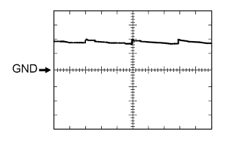
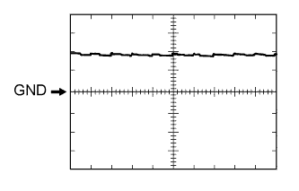
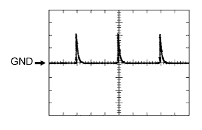
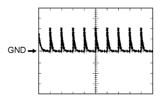

СИСТЕМА ЛЮКА > КОНТАКТЫ ЭБУ |
| ПРОВЕРЬТЕ ПРИВОДНОЙ МЕХАНИЗМ ЛЮКА (ЭБУ ЛЮКА) |
Отсоедините разъем W2 ЭБУ.
Измерьте сопротивление и напряжение в соответствии со значениями, приведенными в таблице.
| Номера контактов (обозначения) | Цвет проводки | Описание контактов | Условие | Заданные условия |
| W2-1 (B) - W2-2 (E) | W - W-B | Питание аккумуляторной батареи | Всегда | 11 – 14 В |
| W2-5 (IG) - W2-2 (E) | L - W-B | Источник питания IG | Зажигание выключено | менее 1 В |
| W2-5 (IG) - W2-2 (E) | L - W-B | Источник питания IG | Зажигание включено | 11 - 14 В |
| W2-2 (E) - масса | W-B - масса | Масса | Всегда | Менее 1 Ом |
Подсоедините разъем W2 ЭБУ.
Измерьте напряжение в соответствии со значениями, приведенными в таблице.
| Номера контактов (обозначения) | Цвет проводки | Описание контактов | Условие | Заданные условия |
| W2-7 (OPN) - W2-2 (E) | LG - W-B | Сигнал открывания для привода люка | Зажигание включено, люк закрыт Переключатель открывания в выключенном положении | 11 - 14 В |
| W2-7 (OPN) - W2-2 (E) | LG - W-B | Сигнал открывания для привода люка | Зажигание включено, люк закрыт Переключатель открывания во включенном положении | Менее 1 В |
| W2-9 (CLS) - W2-2 (E) | B - W-B | Сигнал закрывания для привода люка | Зажигание включено, люк открыт Переключатель закрывания в выключенном положении | 11 - 14 В |
| W2-9 (CLS) - W2-2 (E) | B - W-B | Сигнал закрывания для привода люка | Зажигание включено, люк открыт Переключатель закрывания во включенном положении | Менее 1 В |
| W2-10 (UP) - W2-2 (E) | R - W-B | Сигнал подъема для привода люка | Зажигание включено, люк опущен Переключатель подъема в выключенном положении | 11 - 14 В |
| W2-10 (UP) - W2-2 (E) | R - W-B | Сигнал подъема для привода люка | Зажигание включено, люк опущен Переключатель подъема во включенном положении | Менее 1 В |
| W2-8 (DWN) - W2-2 (E) | P - W-B | Сигнал опускания для привода люка | Зажигание включено, люк поднят Переключатель опускания в выключенном положении | 11 - 14 В |
| W2-8 (DWN) - W2-2 (E) | P - W-B | Сигнал опускания для привода люка | Зажигание включено, люк поднят Переключатель опускания во включенном положении | Менее 1 В |
| ПРОВЕРЬТЕ РАСПРЕДЕЛИТЕЛЬНЫЙ БЛОК СО СТОРОНЫ ВОДИТЕЛЯ И ГЛАВНЫЙ ЭБУ КУЗОВА (БОРТОВОЙ ЭБУ СЕТИ МУЛЬТИПЛЕКСНОЙ СВЯЗИ) |
| *A | Для моделей с левосторонним рулевым управлением | *B | Для моделей с правосторонним рулевым управлением |
Снимите главный ЭБУ кузова (бортовой ЭБУ сети мультиплексной связи) с распределительного блока со стороны водителя в сборе (Нажмите здесь).
Измерьте напряжение и сопротивление в соответствии со значениями, приведенными в таблице.
| Номера контактов (обозначения) | Цвет проводки | Описание контактов | Условие | Заданные условия |
| A-30 (BECU) - масса | - | Питание аккумуляторной батареи | Всегда | 11 – 14 В |
| A-31 (ALTB) - масса | - | Питание аккумуляторной батареи | Всегда | 11 – 14 В |
| A-32 (IG) - масса | - | Питание замка зажигания | Зажигание включено | 11 - 14 В |
| A-32 (IG) - масса | - | Питание замка зажигания | Зажигание выключено | менее 1 В |
| A-29 (ACC) - масса | - | Источник питания ACC | Замок зажигания в положении ACC | 11 - 14 В |
| A-29 (ACC) - масса | - | Источник питания ACC | Зажигание выключено | менее 1 В |
| A-11 (GND1) - масса | - | Масса | Всегда | Менее 1 Ом |
| G63-3 (GND2) - масса | W-B - масса | Масса | Всегда | Менее 1 Ом |
Установите главный ЭБУ кузова (бортовой ЭБУ сети мультиплексной связи).
Измерьте напряжение в соответствии со значениями, приведенными в таблице.
| Номера контактов (обозначения) | Цвет проводки | Описание контактов | Условие | Заданные условия |
| 2I-27 (FLCY) - масса | R - масса | Входной сигнал выключателя освещения проема левой передней двери | Левая передняя дверь открыта | Менее 1 В |
| 2I-27 (FLCY) - масса | R - масса | Входной сигнал выключателя освещения проема левой передней двери | Левая передняя дверь закрыта | 11-14 В |
| G64-11 (L2) - масса | GR - масса | Входной сигнал блокировки, связанный с ключом двери водителя | Цилиндр замка двери водителя в положении блокировки | Менее 1 В |
| G64-11 (L2) - масса | GR - масса | Входной сигнал блокировки, связанный с ключом двери водителя | Зажигание выключено, все двери закрыты, и цилиндр замка двери водителя в нейтральном положении | Формирование импульсов (см. осциллограмму 1 или 2) |
| G64-24 (UL3) - масса | LG - масса | Сигнал разблокировки, связанный с ключом двери водителя | Цилиндр замка двери водителя в положении разблокировки | Менее 1 В |
| G64-24 (UL3) - масса | LG - масса | Сигнал разблокировки, связанный с ключом двери водителя | Зажигание выключено, все двери закрыты, и цилиндр замка двери водителя в нейтральном положении | Формирование импульсов (см. осциллограмму 3 или 4) |
| G64-26 (RDA) - масса* | P - масса | Входной сигнал приемника системы блокировки дверей | Ключ не вставлен в цилиндр замка зажигания, все двери закрыты, выключатель передатчика: выкл → вкл | Формирование импульсов |
| Номера контактов (обозначения) | Цвет проводки | Описание контактов | Условие | Заданные условия |
| 2H-26 (FRCY) - масса | B - масса | Входной сигнал выключателя освещения проема правой передней двери | Правая передняя дверь открыта | Менее 1 В |
| 2H-26 (FRCY) - масса | B - масса | Входной сигнал выключателя освещения проема правой передней двери | Правая передняя дверь закрыта | 11–14 В |
| G64-11 (L2) - масса | GR - масса | Входной сигнал блокировки, связанный с ключом двери водителя | Цилиндр замка двери водителя в положении блокировки | Менее 1 В |
| G64-11 (L2) - масса | GR - масса | Входной сигнал блокировки, связанный с ключом двери водителя | Зажигание выключено, все двери закрыты, и цилиндр замка двери водителя в нейтральном положении | Формирование импульсов (см. осциллограмму 1 или 2) |
| G64-24 (UL3) - масса | LG - масса | Сигнал разблокировки, связанный с ключом двери водителя | Цилиндр замка двери водителя в положении разблокировки | Менее 1 В |
| G64-24 (UL3) - масса | LG - масса | Сигнал разблокировки, связанный с ключом двери водителя | Зажигание выключено, все двери закрыты, и цилиндр замка двери водителя в нейтральном положении | Формирование импульсов (см. осциллограмму 3 или 4) |
| G64-26 (RDA) - масса* | P - масса | Входной сигнал приемника системы блокировки дверей | Ключ не вставлен в цилиндр замка зажигания, все двери закрыты, выключатель передатчика: выкл → вкл | Формирование импульсов |
|  |
С помощью осциллографа проверьте форму сигнала 1.
| Позиция | Описание |
| Номера контактов (обозначения) | G64-11 (L2) - масса |
| Настройки прибора | 5 В/дел., 20 мс/дел. |
| Условие | Зажигание в положении OFF (ВЫКЛ), все двери закрыты, цилиндр замка передней двери в нейтральном положении |
|  |
С помощью осциллографа проверьте форму сигнала 2.
| Позиция | Описание |
| Номера контактов (обозначения) | G64-11 (L2) - масса |
| Настройки прибора | 5 В/дел., 20 мс/дел. |
| Условие | Зажигание в положении OFF (ВЫКЛ), все двери закрыты, цилиндр замка передней двери в нейтральном положении |
|  |
С помощью осциллографа проверьте форму сигнала 3.
| Позиция | Описание |
| Номера контактов (обозначения) | G64-24 (UL3) - масса |
| Настройки прибора | 5 В/дел., 20 мс/дел. |
| Условие | Зажигание в положении OFF (ВЫКЛ), все двери закрыты, цилиндр замка двери водителя в нейтральном положении |
|  |
С помощью осциллографа проверьте форму сигнала 4.
| Позиция | Описание |
| Номера контактов (обозначения) | G64-24 (UL3) - масса |
| Настройки прибора | 5 В/дел., 20 мс/дел. |
| Условие | Зажигание в положении OFF (ВЫКЛ), все двери закрыты, цилиндр замка двери водителя в нейтральном положении |
| ПРОВЕРЬТЕ ЭБУ СЕРТИФИКАЦИИ (для моделей с интеллектуальной системой ограничения доступа) |
Отсоедините разъем G38 ЭБУ.
Измерьте напряжение и сопротивление в соответствии со значениями, приведенными в таблице.
| Номера контактов (обозначения) | Цвет проводки | Описание контактов | Условие | Заданные условия |
| G38-1 (+B) - G38-15 (E) | V - W-B | Питание аккумуляторной батареи | Всегда | 11 – 14 В |
| G38-15 (E) - масса | W-B - масса | Масса | Всегда | Менее 1 Ом |
| G38-16 (IG) - G38-15 (E) | W - W-B | Источник питания IG | Зажигание выключено | менее 1 В |
| G38-16 (IG) - G38-15 (E) | W - W-B | Источник питания IG | Зажигание включено | 11 - 14 В |
| G38-17 (CUTB) - G38-15 (E) | L - W-B | Питание аккумуляторной батареи | Всегда | 11 – 14 В |
Снова подсоедините разъем G38 ЭБУ.
Измерьте напряжение в соответствии со значениями, приведенными в таблице.
| Номера контактов (обозначения) | Цвет проводки | Описание контактов | Условие | Заданные условия |
| G39-5 (RCO) - G38-15 (E) | L - W-B | Питание приемника системы блокировки дверей | Зажигание выключено, все двери закрыты, выключатель передатчика не нажат | Менее 1 В |
| G39-5 (RCO) - G38-15 (E) | L - W-B | Питание приемника системы управления замками дверей | Зажигание выключено, все двери закрыты, выключатель передатчика нажат | 4,5 - 5,5 В |
| G39-15 (RDA) - G38-15 (E) | G - W-B | Сигнал входных данных приемника системы управления замками дверей | Зажигание выключено | Импульсы формируются 11 -14 В через определенные промежутки времени |
| G39-16 (RSSI) - G38-15 (E) | P - W-B | Сигнал наличия электромагнитных волн приемника системы управления замками дверей | Все двери закрыты и заблокированы, переключатель передатчика не нажат | 11 - 14 В |
| G39-16 (RSSI) - G38-15 (E) | P - W-B | Сигнал наличия электромагнитных волн приемника системы управления замками дверей | Все двери закрыты и заблокированы, переключатель передатчика нажат | Ниже 2 В |